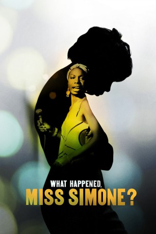
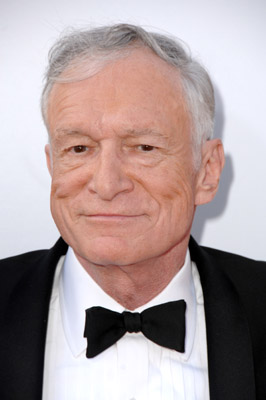

#4860 What Happened, Miss Simone?
Auszeichnungen: für 1 Oscars nominiert
 
 IMDB-Wertung: 7.6 / 10
IMDB-Wertung: 7.6 / 10  Tomatometer: 89
Tomatometer: 89  Metascore: 0
Metascore: 0 
Eine Dokumentation über die schwarze Jazz-Legende Nina Simone, die mit ihrer Version von “I loves you Porgy“ zum Superstar aufstieg. Anfangs noch einzig in ihre Rolle als begabte Musikerin gedrängt, politisiert sich Simone im Verlauf ihrer Karriere immer weiter und wird spätestens mit der Ermordung von Dr. Martin Lutjer King zu einer ambitionierten Stimme der afroamerikanischen Bürgerrechtsbewegung der 60er-Jahre. Dabei überschreitet sie immer wieder gesellschaftliche Grenzen, mit denen sie sowohl privat als auch öffentlich für Aufregung sorgt, wodurch sich aber die Ambitionen einer Künstlerin zeigten, die sich für die grundlegenden Rechte von Menschen einsetzte.
Jahr: 2015
Dauer: 102 Minuten
FSK:
Land: USA Studio: NetflixTonspuren: DD2.0 - ,
Untertitel:
Auflösung: 1080p (1920x1080) Größe: 8110 MB
Genre: Musik, Dokumentation, Biographie
Regisseur: Liz Garbus
Drehbuch: Javier García Arredondo
Soundtrack:
Darsteller:
- Stokely Carmichael als Himself , archive footage
 Walter Cronkite als Himself , archive footage
Walter Cronkite als Himself , archive footage- Stanley Crouch als Himself
- Dick Gregory als Himself
-  Hugh M. Hefner als Himself , archive footage
 Martin Luther King als Himself , archive footage
Martin Luther King als Himself , archive footage- Nina Simone als Herself , archive footage
- James Baldwin als Himself , archive footage
- Gerrit De Bruin als Himself - Friend
- Elisabeth Henry-Macari als Miss Mazzie
- Lisa Simone Kelly als Herself
- Al Schackman als Himself
- Attallah Shabazz als Herself
- Ilyasah Shabazz als Herself
- Andrew Stroud als Himself , archive footage
- Malcolm X als Himself , archive footage
Datei: X:\Dokumentationen\Biografie\What Happened, Miss Simone (2015, FSK, 1920x1080).mkv seit 24.11.2016
Festplatte: HD Serien(SU-Z)+Dokus+Musik
 Es gibt insgesamt 21 Filme in der Gruppe 'Dokumentationen\Biografie'
Es gibt insgesamt 21 Filme in der Gruppe 'Dokumentationen\Biografie'